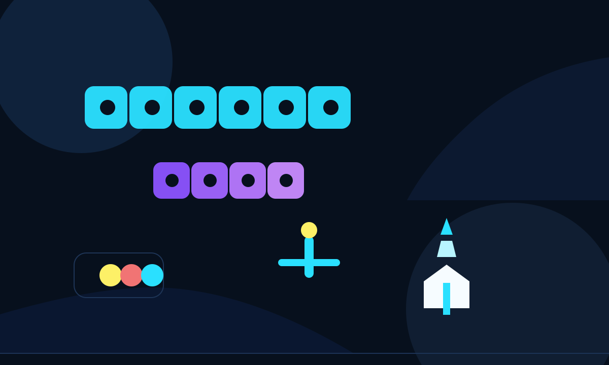
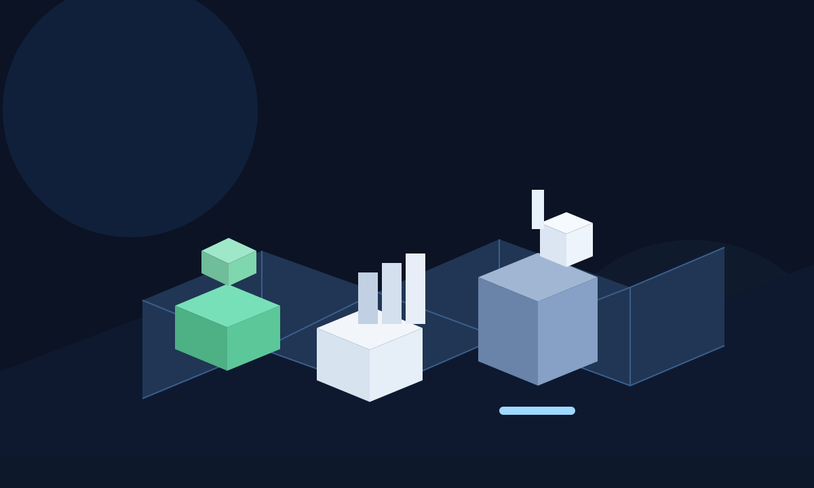
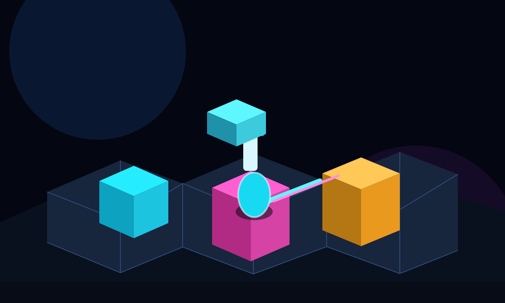
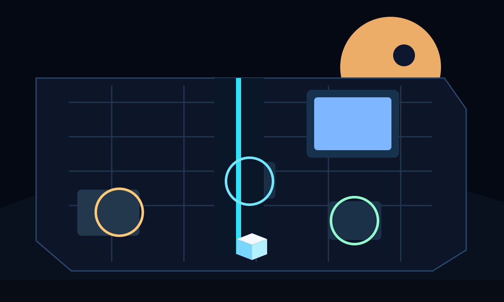
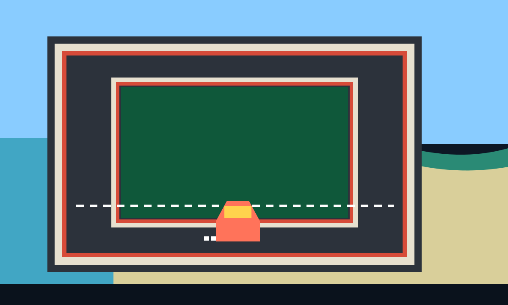
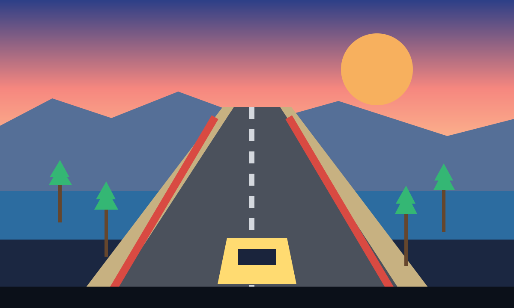

Public Studio Hub // Elusion Works
Small teams. Big swings. Real games.
This is the public front door for a growing lineup of playable worlds: pressure-cooker politics, dense city building, and sharp-edged arcade chaos.
- 7 active projects
- Playable demos and installable games
- Built to grow into demos, store pages, and releases


Current Lineup
Flagship games already in motion.
The site is designed to hold public releases over time. Right now it introduces the core playable projects and gives each one enough room to feel distinct.
Browser Strategy
Mandate 2029
A governing sim about momentum, compromise, cabinet pressure, media storms, and the brutal arithmetic of staying electable while trying to change a country.
- Polling pressure and election pacing
- Reactive crisis deck and political capital tradeoffs
- Regional swingboard and legacy-score framing
Browser City Builder
Civicrise
A living isometric city builder about shaping dense urban systems, balancing civic needs, and watching a place emerge block by block into a believable metropolis.
- Readable isometric city drama
- Citizen services, transport, and layered planning
- Onboarding and help flows built for repeat sessions
Desktop Arcade
Swarmbreaker
Fast, vivid arcade defence with segmented swarms, poisoned mushrooms, wave pressure, and the kind of score-chasing tension that feels right at home in a late-night "one more run" session.
- Classic arcade loop with modern quality-of-life polish
- Wave scaling, audio controls, and extra-life thresholds
- Purpose-built for immediate, readable action
Emerging Demos
Environment slices and new prototype lanes.
These projects are earlier, but they now have real concept spaces you can review: one orbital dock, one cyberpunk district, one marina circuit, and one coast-road run.




Approach
A public shell built to expand with every release.
Showcase first
The site is already structured for richer pages, media drops, and clearer public identity as the lineup grows.
Static by default
It runs cleanly on GitHub Pages today, with no framework lock-in and no build complexity needed for the first release.
Ready for upgrades
Store buttons, public demos, mailing-list links, devlogs, and per-game detail pages can slot in without rebuilding the whole thing.
Future Releases
This page becomes the release rail for every next step.
As projects open up, this hub can carry browser demos, screenshots, downloadable builds, patch notes, Steam links, and the next games that arrive behind them.